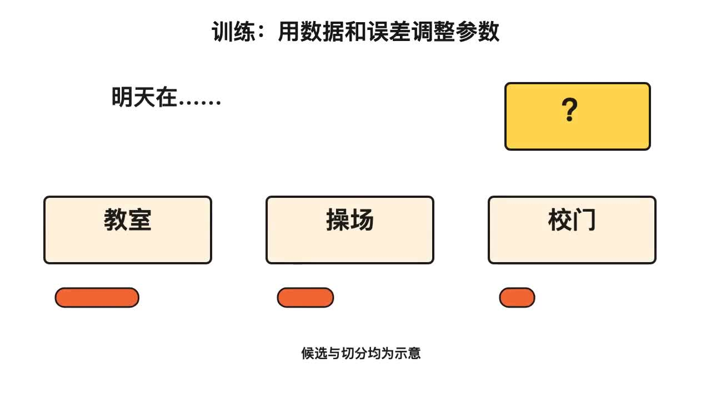

提供知识点
教材、教案、导学单与学段
面向教师备课与学生自学
提供教材与学段，让智能体按同一条讲解主线制作视频。你可以修改旁白、素材与动作，再导出有声成片。
开始配置体验真实编辑器 ↗这个页面负责配置与任务交接；视频生成由你选择的智能体和本地工具完成。

教材、教案、导学单与学段
定义、同一案例、逐句动作
核对知识，试听声音，编辑素材
有声MP4、HTML、SRT与来源
可交给自己的智能体
先安装 Skill，再把以下任务与原始材料一起发送给智能体。
已有产物 可以直接播放
案例依据 GitLink两天培训材料包 中的知识点与实践任务开发，材料包源于《大模型全链路开发：基于书生开源体系的项目实战》。
以下均来自实际生成的视频片段。第三至第五课为历史实例，用于展示画面素材与流程；尚未全部按 v1.3 重制。
参数格、预测比较与误差信号的可编辑SVG机制。
原创漫画情境与任务对象，说明评测目标。
参数关系示意、独立物件与训练路径。
问题、资料与模型之间的检索链路。
自动检查验证文件、计时与导出链路；课堂理解、讲解自然度与学习收益需要教师、学生实测。项目不声称已有全学科效果数据。
完整使用指南 · 声音与角色接入说明 · 案例来源记录